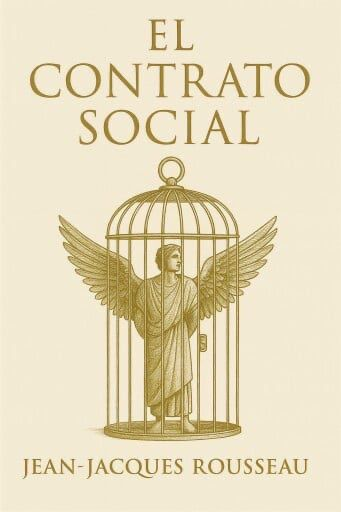

Hola, bienvenidos a mi primera página web el cual realizaré esta investigación sobre el contrato social. Aqui desarrollo la definición y formas de verlo, así como algunas ideologías, empezando por una pregunta clave para entender el tema.
Para el profesor:Apolo Ageo Alejo Mejía
Universidad Autónoma de Guerrero
Escuela Preparatoria No.7 "Salvador Allende Gossens"
Hugo Antonio Cortés Castro Grupo:213 No. de lista:5
Cutlura Digital
